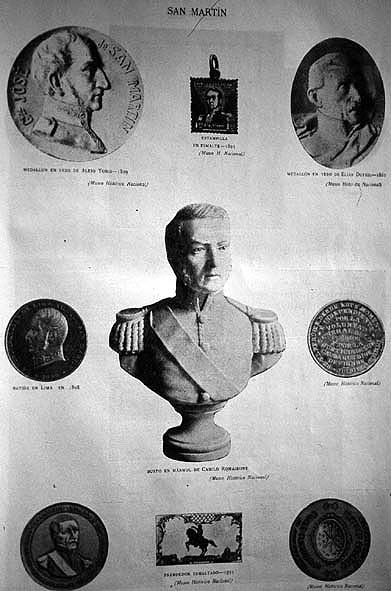

|
State fetishes
|
|  |
| Adolfo P. Carranza, Reliquias sanmartinianas |
In 1899, following the acquisition of a great number of objects from General José de San Martín's household in his exile at Boulogne-sur-Mer, France, on behalf of the National Historical Museum of Argentina, the philologist and historian Ernesto Quesada published in the prestigious Revista Nacional a long study of their significance, entitled 'Las reliquias de San Martín y su iconografía: estudio de las colecciones del Museo Histórico Nacional'. With minor amendments and additions, the text was published in book form a year later, and in 1905 the director of the Museum, Adolfo P. Carranza, edited a large illustrated volume, funded by the Argentine state, that documented all the 'reliquias sanmartinianas' in the Museum´s possession, as well as the numerous inaugurations of statues and monuments to the 'Libertador' that had taken place over the previous years.
Quesada's 'decyphering' of the San Martinian relics is an exercise in historiographical authentification and reappropriation of objects and their meanings. His objective is to replace the Venezuelan Bolívar by the Argentine San Martín as the 'father of independence', a title, he argues, which Bolívar has cynically usurped by taking from Peru to Colombia a false banner of the Cabildo of Lima, the true version of which had been given to San Martín as an expression of gratitude for his victories against the Spaniards. The 'authenticity' of the Argentine banner is in turn 'proven' by a comparison of the statues of both 'Liberators' on the respective main squares of Buenos Aires and Bogotá, and in particular a (not quite openly phallic) comparison of their sabres, from which San Martín emerges as the true hero:
'Nothing reveals more graphically the antithesis between Bolívar and San Martín than their iconography. The superb statue by Daumas which decorates our Retiro square, shows the Argentine hero on horseback, arrogant, in martial pose and of grave and at the same time severe physiognomy, with his curved sabre erect in the energetic, yet tranquil, mood of self-confident leadership; Tenerani's impressive statue on Bogotá's principal square represents the Colombian hero on foot, wrapped in the folds of an ordinary cape, his face austere, the high forehead prematurely wrinkled, showing a certain indifference, the entire pose breathing disillusion and hesitation, while his right hand holds a sword which resembles a salon sabre, and which he certainly never used.'